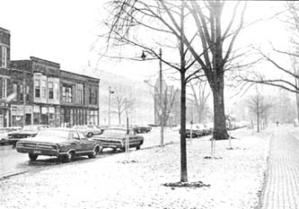
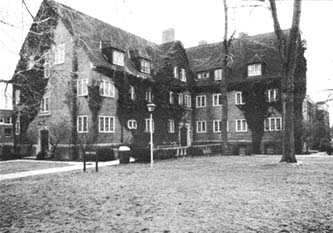
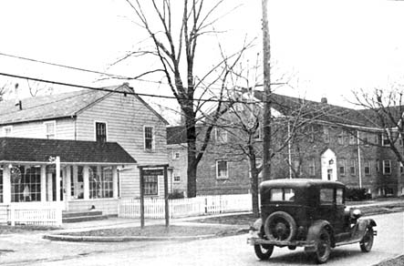
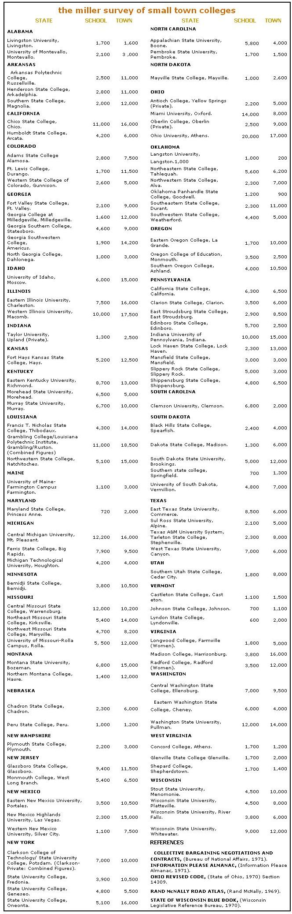

AS KATE CARLTON POINTED OUT IN THE PRECEEDING ARTICLE, A
COLLEGE CAN BE A HANDY STEPPINGSTONE BACK TO THE LAND. THEN AGAIN,
YOU MAY WANT TO STAY RIGHT THERE, ONCE YOU SETTLE DOWN TO
Not everybody wants to live in the city these days but, then again, not everybody wants to run off and live in the wilderness either. Which kind of leaves the small town as the "middle ground" alternative . . . and there are lots of small towns hanging around the country to choose from.
Of course, not every borough and hamlet is guaranteed to appeal equally to every seeker after the Good Life. Some are only baby-sized imitations of alarger metropolitan mess with traffic, pollution and assorted city-type hassles of their own. Others-although clean, non-industrial and quiet-may prove to be far too conservative and sexually and religiously uptight for (yes, even) you.
The whole situation might appear rather grim if it weren't for one particular variety of small rural town that quite often combines all the best of everything in low pollution and high opportunities to develop a free life style . . . and that one particular kind of town is the small country college town.
Which is to say that the rural university borough is frequently a delightfully kinkier version of the much more common straight country town. Often still clean and beautiful (since its major local industry is a tree-lined campus rather than a pulp mill or factory), such a village also tends to view "unusual" behavior with a rather tolerant eye.
With the relaxation of yesterday's rigid rules and restrictions for college students, many "backwater" university communities have felt free to experiment with alternative life styles and have come to realize the advantage of their isolation from the city. Far from the madness of great centers of population, these small colleges have often created something of an oasis of individual freedom in the middle of a society that appears to be increasingly restrictive.
There's probably no place in the country (other than a college or university) where such large numbers of people voluntarily come together . . . often simply for the purpose of living and interacting with others who have similar personal goals. To an increasing extent, the college experience has become less a four year hassle for a degree than a series of personal encounters . . . important in and of themselves.
In this context, many small university towns have come close to the real meaning of community . . . in that people who desire to become freer and more creative are attempting to do so with a high degree of community self-participation, harmonious interaction and peace. Such experimentation, of course, creates a healthy opportunity for alternative life style experiments by others-student and non-student alike-in the surrounding area.
The economic situation in a small, rural college town is usually just as attractive as the community's liberal atmosphere. True, the pay scale "out there" is lower than the wages you'll find in a large metropolitan area . . . but the living costs are even lower yet. If the community is close to tourist attractions, for instance, prices are sure to be high . . . at least during the busy season. And sometimes there are temporary disruptions of an otherwise low cost-of-living curve as when a school liberalizes its housing regulations and the demand (and price) of off-campus quarters soars. Generally, though, living costs are relatively low in small, rural college towns.
Happily this is not usually the case with wages. While it's true that businesses in a university town often pay only a little more than area farm wages, state supported colleges pay comparatively well . . . usually more than any other local employer.
For example, Wisconsin farm wages for 1968 averaged $1.51 an hour. But in the university towns of Plattesville and River Falls-both located in counties where 87% of the land is used for agricultural production-wage rates for non-professional university employees were considerably higher than $1.51.
The situation is best in states with civil service systems since non-professional, full-time employees of state universities are state civil service personnel. This means that wage rates for these workers are uniform throughout the state and university employees in small, rural towns earn as much as their counterparts in the state's cities. General living costs are so much lower for the rural workers, however, that their paychecks reach a lot further. The university switchboard operator at Central State University in rural Wilberforce, Ohio, to cite an example, makes as much money as her counterpart at Ohio State University in metropolitan Columbus . . . but she pays a lot less for basic living expenses.
Additional jobs exist in the town itself, although the pay will almost surely be lower than at the university. College towns have a goodly share of bookstores, stationery and office supply stores, typewriter repair shops, clothing stores, drug stores, restaurants, food stores, laundries, dry cleaners, head shops and theatres. Whether you're working in town or for the school, you can often choose your own hours and wear your hair and clothes more or less as you please . . . personal flexibility is generally greater all around than it is back in the city.
It's really not difficult to establish yourself in a rural college town. Start by checking out the accompanying list of over 100 schools. All are state supported institutions (unless noted) and the latest population figures are given for both the school and the small town in which it's located.
Of course, not all are small versions of Harvard (perhaps that's good). Some-especially those in Pennsylvania-were formerly teachers' colleges, and many in the midwest are geared toward mechanical and agricultural training. But while they may not all be intellectual meccas, they're not complete cultural voids, either.
A number of both intellectually stimulating and pleasant university communities do exist where people experience clean air and water, little traffic, a low cost of living, cheap and varied housing and-perhaps most important-each other.
Two areas immediately come to mind as examples of inviting rural college environments. The first is near Bald Butte Mountain slightly north of the Snake River Valley in eastern Washington. Located practically back-to-back on the Washington-Idaho border is Washington State University at Pullman and the University of Idaho at Moscow. These schools, within 10 miles of one another, have a combined student population of 18,000 in their respective towns of 14,000 and 15,000.
Across the country-only a few miles from the Smokey Mountains in the town of Boone, North Carolina-is Appalachian State University. The school has 5,800 students; the town of Boone, only 4,000 people.
As you look over the list with this article, try to select locations where the school is larger than the town so you'll have less local competition for a job. When you've chosen a few specific targets, find out if the appropriate states have a civil service system applicable to university employees. If so, try to take the state civil service exam before writing to the school's personnel department. These simple math and reading tests are usually given once a month in locations throughout the state . . . check the state employment office for details.
After getting a high test score (it's easy!) write the school's personnel department explaining that you'll be willing to accept any kind of work. Rather than holding out for a particular job, take whatever's available. Once you've settled in and gotten your bearings, you can think about transferring to another position.
You might also write the town's chamber of commerce. Tell them how much you've always enjoyed driving through their community on the way to somewhere or other (if true) and that you'd like to relocate in the area. They might be of help in giving you further employment information.
With some effort and a little luck, you should be able to move to a nice, liberal, out-of-the-way college town . . . one of the few really attractive alternatives between the city and the farm.
|
 |
 |
 |
|
 |
|
|